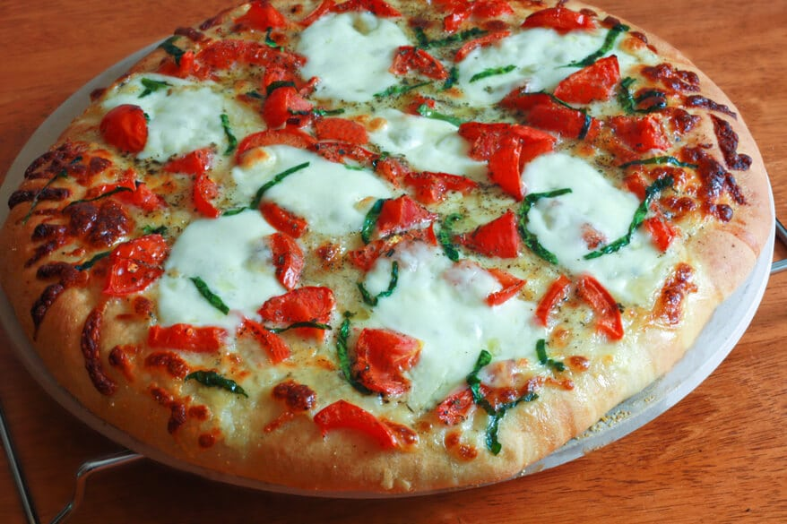

Margherita Pizza

Description:
This is a simple yet tasteful pizza that primarily has tomato sauce, cheese, and basil.
Ingredients:
- 12 inch pizza crust or Italian bread shell
- 3 plum tomatoes, thinly sliced
- 1/3 Buitoni Refrigerated Pesto with Basil
- 1 1/2 cups shredded mozzarella cheese
- 1/2 teaspoon crushed red pepper
Steps:
- Preheat oven to 450 F. Place pizza crust on baking sheet.
- Spread pesto over pizza crust.
- Arrange tomatoes over pesto and sprinkle with cheese and crushed red pepper.
- Bake for 10 to 12 minutes or until the cheese is melted and the crust is golden brown.
- Cut into slices for the family.
- Enjoy!